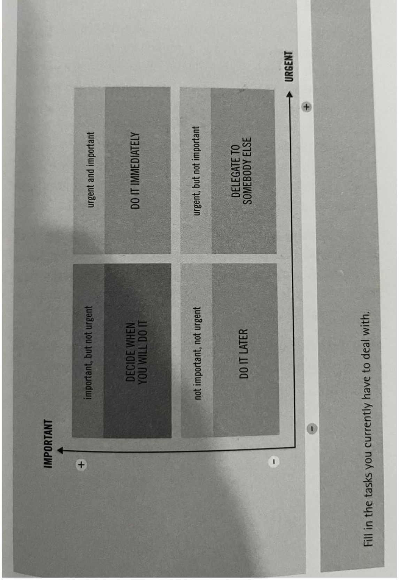
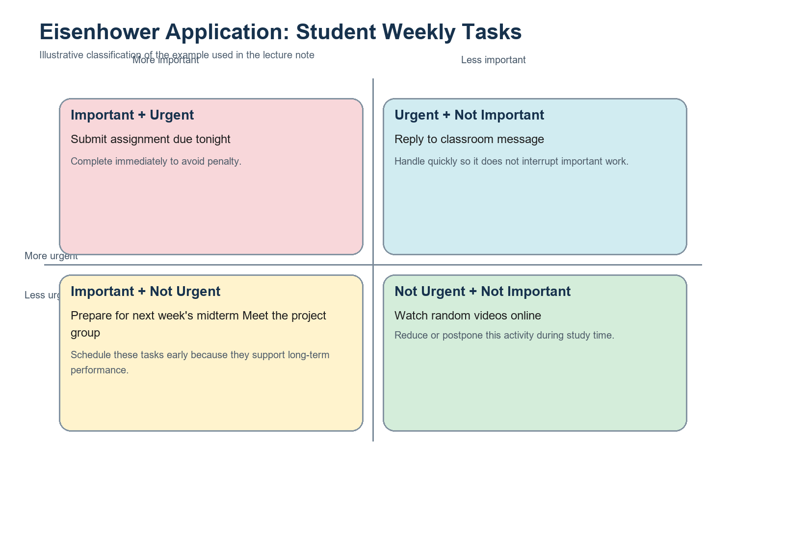
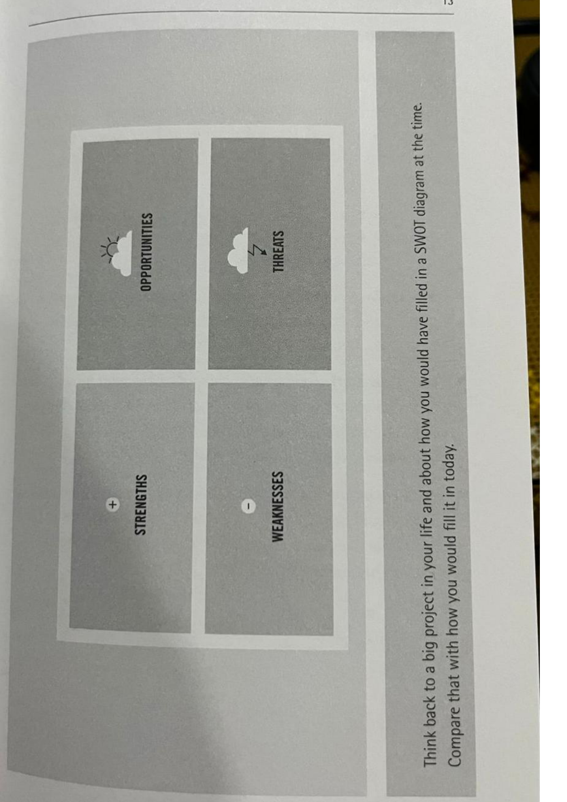
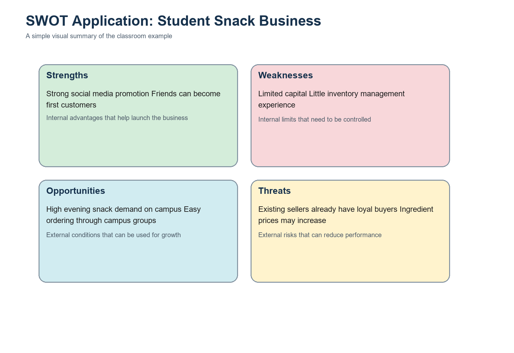
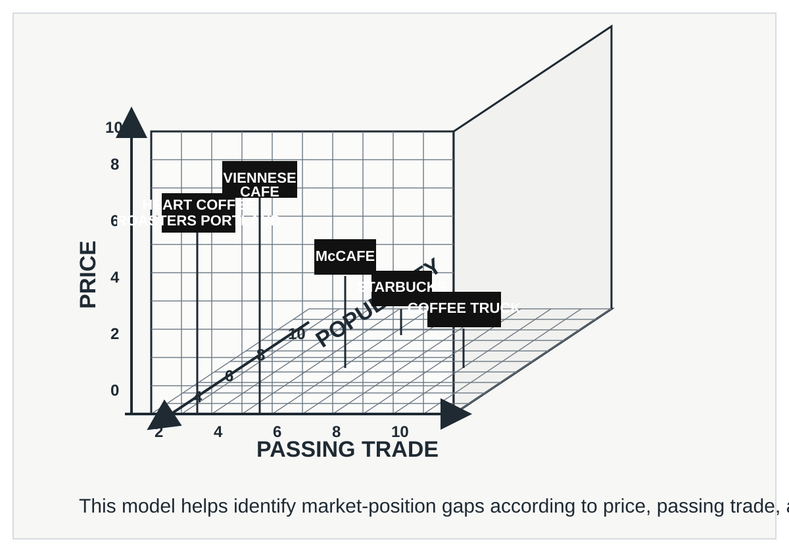
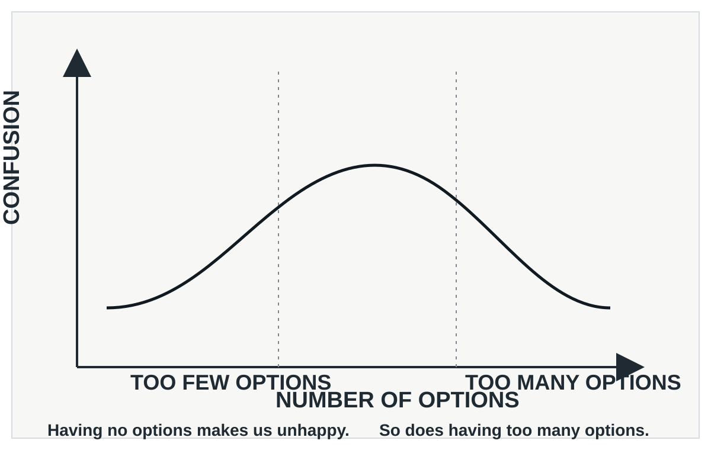
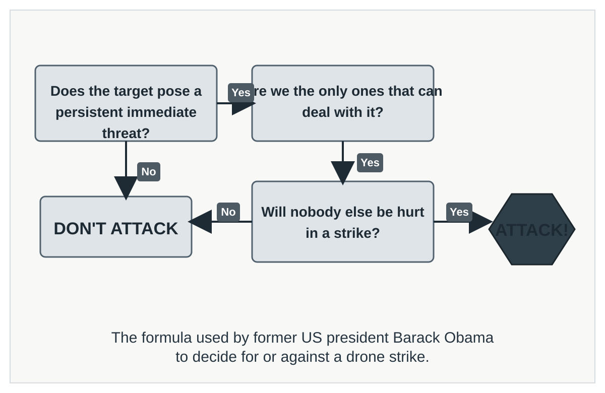

Learning Goals
What students should be able to do
Prioritize better
Distinguish urgent tasks from important tasks and allocate effort more deliberately.
Read situations clearly
Separate internal conditions from external factors before choosing a strategy.
Allocate resources
Evaluate products or projects based on growth potential and relative competitive strength.
Improve by reflection
Use outcome reviews and coaching questions to strengthen future decision quality.
Lecture Content
Methods and simple applications
01
The Eisenhower Matrix
Use it to decide what to do now, schedule, delegate, or remove.
Use when
You need to sort tasks quickly without confusing urgency with long-term value.
Decision cue
Ask whether a task matters for outcomes, or only feels noisy because it is immediate.
Main idea
The Eisenhower Matrix classifies tasks by importance and urgency. Its main value is protecting important work before it becomes a crisis.
Four boxes
- Important and urgent: do it now
- Important but not urgent: schedule it
- Urgent but not important: delegate it
- Not urgent and not important: reduce or remove it
Simple application
Situation: A student must submit an assignment tonight, prepare for next week’s midterm, reply to a class message, avoid distraction, and meet the project group.
Decision: Finish the assignment first, schedule the midterm and project tasks, reply quickly to the message, and avoid low-value distractions during study time.
Teaching point: urgency often feels louder than importance, but the best decisions protect long-term goals.


02
SWOT Analysis
Use it to understand internal conditions and external pressures before acting.
Use when
You need a disciplined way to map what is inside your control and what is outside it.
Decision cue
Turn the four lists into a strategy instead of treating them as a descriptive checklist.
Main idea
SWOT separates the decision environment into four areas: Strengths, Weaknesses, Opportunities, and Threats.
How to read it
- Strengths: internal advantages
- Weaknesses: internal limitations
- Opportunities: external chances for improvement
- Threats: external risks or obstacles
Simple application
Situation: A student wants to start a small online snack business for the campus community.
Decision: Start with a small menu, use social media for promotion, manage inventory carefully, and focus on a clear campus niche.
Teaching point: SWOT becomes useful only when the list leads to strategy.


03
The BCG Box
Use it to decide where to invest, maintain, test, or phase out.
Use when
You need to compare several products or initiatives inside one shared portfolio.
Decision cue
Balance growth potential with current competitive strength before allocating scarce resources.
Main idea
The BCG Box evaluates products or projects using market growth and relative market share.
Four categories
- Stars: high share, high growth
- Cash Cows: high share, low growth
- Question Marks: low share, high growth
- Dogs: low share, low growth
Simple application
Situation: A school cooperative sells bottled water, school hoodies, reusable tumblers, and printed phone charms.
Decision: Invest in tumblers, rely on bottled water for steady income, test hoodies further, and consider stopping phone charms.
Teaching point: the BCG Box is a decision aid, not a substitute for realistic judgment.


04
Feedback Analysis
Use outcomes and reflection loops to improve decision quality over time.
Use when
You want to learn from past decisions in a structured and repeatable way.
Decision cue
Compare expected results with actual outcomes, then document what should change next time.
Main idea
Feedback Analysis connects decisions to evidence: prediction, action, result, and adjustment.
Core steps
- Record: what you expected before acting
- Review: what actually happened
- Diagnose: which assumptions were accurate or weak
- Improve: define one change for the next cycle
Simple application
Situation: A student team predicts 120 participants for a seminar but only 80 attend.
Decision: Refine outreach channels, adjust timing, and test a smaller pilot before the next event.
Teaching point: better decisions come from tested assumptions, not memory alone.
Open the full file for classroom explanation and examples.
05
The John Whitmore Model (GROW)
Use coaching questions to move from goals to concrete action plans.
Use when
You need to guide someone from uncertainty toward a realistic commitment.
Decision cue
Ask progression questions: Goal, Reality, Options, then Will.
Main idea
The GROW model structures coaching decisions through four stages so actions are both clear and owned by the learner.
GROW stages
- Goal: what outcome is desired
- Reality: what is true now
- Options: what alternatives exist
- Will: what action will be taken and when
Simple application
Situation: A student is struggling to complete a thesis chapter on time.
Decision: Set a weekly writing target, identify real constraints, choose two practical options, and commit to one schedule.
Teaching point: coaching quality improves when questions are sequential and specific.
Open the full file for classroom explanation and examples.
06
Project Portfolio Matrix
Use it to prioritize project options based on strategic value and implementation effort.
Use when
You must decide which projects to start, defer, or stop under limited resources.
Decision cue
Prioritize high strategic impact projects that are feasible within current capacity.
Main idea
This matrix compares project opportunities by value and complexity to support transparent portfolio choices.
Decision pattern
- Quick wins: high value, low effort
- Major bets: high value, high effort
- Fill-ins: low value, low effort
- Defer/stop: low value, high effort
Simple application
Situation: A department reviews multiple campus improvement proposals with one semester budget.
Decision: Implement two quick wins first, prepare one major bet, and defer low-value high-effort proposals.
Teaching point: portfolio choices are stronger when criteria are explicit and shared.
Open the full file for classroom explanation and examples.
07
Rubber Band Model
Use it to manage performance pressure while preventing burnout and quality decline.
Use when
You are balancing high targets with limited time, energy, and attention.
Decision cue
Monitor tension levels and add recovery actions before performance snaps.
Main idea
The model treats performance like tension in an elastic band: productive stretch is useful, excessive stretch is risky.
Practical signals
- Healthy stretch: focused effort and progress
- Warning zone: repeated errors and reduced concentration
- Overstretch: fatigue, delay, and low decision quality
- Recovery: reset workload and restore priorities
Simple application
Situation: A project team faces deadline pressure and starts making preventable mistakes.
Decision: Re-sequence tasks, protect focus time, and schedule short recovery intervals to maintain quality.
Teaching point: sustainable performance requires balancing pressure with deliberate recovery.
Open the full file for classroom explanation and examples.
08
Feedback Box
Use it to sort feedback into clear categories before deciding the next action.
Use when
You receive mixed comments from many stakeholders and need structure before responding.
Decision cue
Separate actionable feedback from noise, then assign owners and timelines.
Main idea
The Feedback Box helps teams classify feedback into practical buckets so decisions become focused and traceable.
Simple application
Situation: A class project receives many comments after presentation day.
Decision: Prioritize high-impact comments first, assign fixes, and defer low-priority suggestions.
Teaching point: better response quality comes from structured categorization, not reactive editing.
Open the full file for classroom explanation and examples.
09
Gap In The Market Model
Use it to identify unmet needs and decide where to position a better solution.
Use when
You need to choose a project or product direction in a competitive environment.
Decision cue
Look for underserved users, weak incumbents, and feasible differentiation.
Main idea
This model compares user needs and current offers to reveal opportunity gaps worth targeting.
Simple application
Situation: A student team plans a campus service startup with limited budget.
Decision: Target one unmet student pain point with a focused MVP before scaling features.
Teaching point: good opportunities come from specific gaps, not broad assumptions.

Open the full file for classroom explanation and examples.
10
Choice Overload
Use it to reduce decision paralysis when too many options lower decision quality.
Use when
You face many alternatives and the team is stuck without commitment.
Decision cue
Limit options by explicit criteria, then compare only top candidates.
Main idea
Choice Overload explains why too many options can delay action, increase regret, and reduce confidence.
Simple application
Situation: A committee must choose one software platform from twelve alternatives.
Decision: Screen by mandatory criteria, shortlist three options, and decide with weighted scoring.
Teaching point: narrowing options early improves both speed and quality.

Open the full file for classroom explanation and examples.
11
Yes Or No Rule
Use it to make fast, binary decisions when criteria and thresholds are already clear.
Use when
You need a quick go or no-go decision to avoid unnecessary delay.
Decision cue
Define minimum conditions first, then decide yes if all are met, no if any fail.
Main idea
The Yes Or No Rule converts complex screening into a simple binary choice based on predefined criteria.
Simple application
Situation: A team evaluates whether to accept a new project request this week.
Decision: Accept only if scope clarity, budget fit, and capacity are all available.
Teaching point: binary rules improve consistency when decision standards are explicit.

Open the full file for classroom explanation and examples.
At A Glance
Quick comparison of the eleven methods
| Method | Best used for | Main question |
|---|---|---|
| Eisenhower Matrix | Prioritizing tasks | What should be done now, scheduled, delegated, or dropped? |
| SWOT Analysis | Understanding a decision context | What are the internal and external advantages and risks? |
| BCG Box | Evaluating a portfolio | Where should resources be invested, maintained, tested, or reduced? |
| Feedback Analysis | Learning from past decisions | What happened versus what was expected, and what should change next? |
| John Whitmore Model (GROW) | Coaching and guided planning | What is the goal, current reality, options, and committed action? |
| Project Portfolio Matrix | Selecting projects under constraints | Which projects offer highest value for feasible effort? |
| Rubber Band Model | Balancing pressure and resilience | How much stretch is productive before performance degrades? |
| Feedback Box | Structuring feedback input | Which feedback is actionable now, later, or not relevant? |
| Gap In The Market Model | Finding strategic opportunities | Where are unmet needs that current offerings do not serve well? |
| Choice Overload | Reducing decision paralysis | How can we narrow options to a manageable set for better commitment? |
| Yes Or No Rule | Fast go/no-go decisions | Do minimum criteria pass clearly, or should the option be rejected? |
Classroom Use
Suggested class activity
Group 1
Use the Eisenhower Matrix to organize a student’s weekly tasks.
Group 2
Use SWOT Analysis for a club event or small business idea.
Group 3
Use the BCG Box for school products, programs, or projects.
Group 4
Use Feedback Analysis to review one recent class or project decision.
Group 5
Use the John Whitmore Model (GROW) for a coaching-style planning case.
Group 6
Use the Project Portfolio Matrix to prioritize several campus initiatives.
Group 7
Use the Rubber Band Model to balance deadline pressure and team recovery.
Group 8
Use the Feedback Box to categorize comments and define a revision sequence.
Group 9
Use the Gap In The Market Model to identify one underserved user need.
Group 10
Use Choice Overload to simplify a case with many alternatives.
Group 11
Use the Yes Or No Rule to decide one proposal with explicit acceptance criteria.
Ask each group to present
- How they classified the case
- What action they recommend
- What assumptions they made
Materials
Download and reuse the lecture files
Use the full note for independent study, the slide-ready version for presentation, and the source file for future revision.
Type a keyword to filter files instantly.
No files match this keyword. Try another term.
Core Course Files
7 files
Lecture Note PDF
Full note with method figures and application figures.
Slide-Ready PDF
Shorter teaching version for presentation use.
Markdown Source
Editable source for the complete lecture note.
Feedback Analysis PDF
Additional decision method handout for reflection-based improvement.
John Whitmore Model PDF
GROW framework handout for coaching and action planning.
Project Portfolio Matrix PDF
Prioritization handout for selecting projects by value and effort.
Rubber Band Model PDF
Performance-pressure handout for balancing stretch and recovery.
Additional Methods Library
4 files
Feedback Box PDF
Companion framework for structured reflection and follow-up action.
Gap In The Market Model PDF
Handout for identifying unmet needs and positioning responses.
Choice Overload PDF
Decision behavior handout on reducing paralysis from too many options.
Yes Or No Rule PDF
Simple binary decision aid for fast screening and commitment checks.
Worked and Source Examples
4 files
Project Portfolio Matrix Example PDF
Worked example to demonstrate matrix scoring and prioritization.
BCG Box (Source PDF)
Standalone source handout for BCG matrix explanation.
Eisenhower Matrix (Source PDF)
Standalone source handout for urgency-importance prioritization.
SWOT Analysis (Source PDF)
Standalone source handout for internal and external factor mapping.